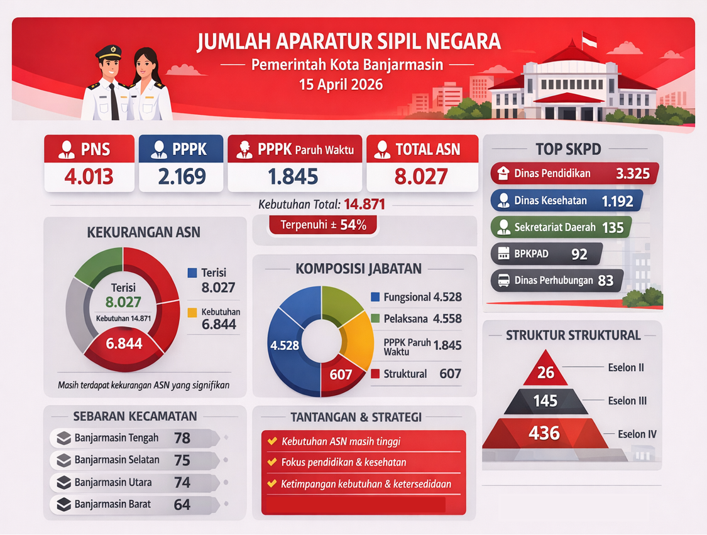
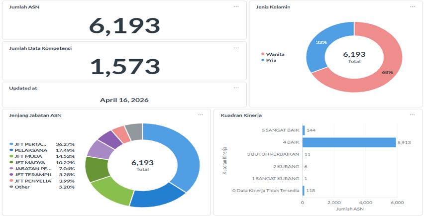
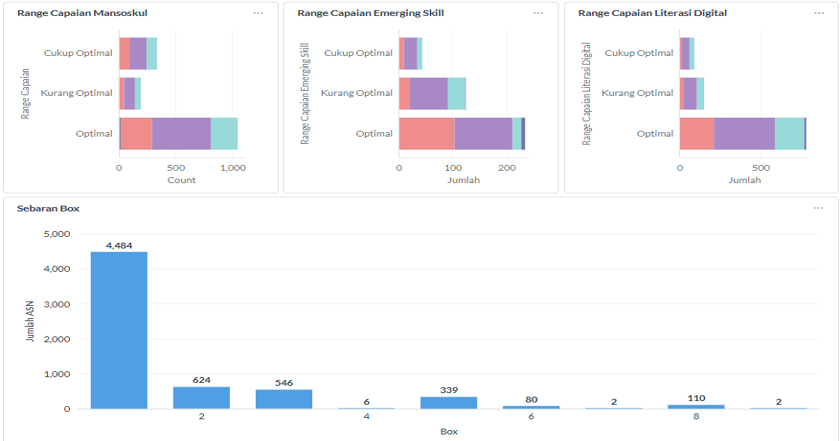
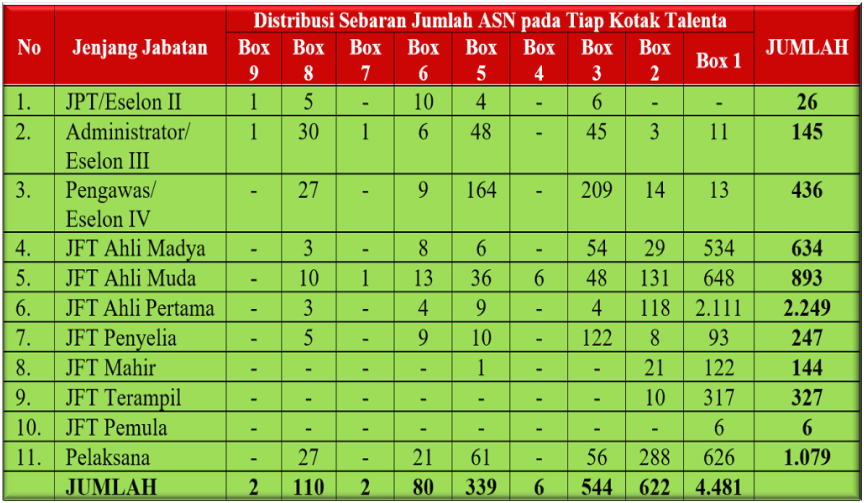

RAPAT KOORDINASI
Badan Kepegawaian dan Pengembangan Sumber Daya Manusia Kota Banjarmasin
1. Menyelaraskan kebijakan Pusat dan Daerah terkait Manajemen ASN
2. Meningkatkan efektivitas pelaksanaan tugas ASN
3. Memastikan manajemen ASN berjalan sesuai dengan peraturan perundang-undangan yang berlaku

1. Undang-Undang Nomor 20 Tahun 2023 tentang Aparatur Sipil Negara
2. Peraturan Badan Kepegawaian Negara Nomor 13 Tahun 2022 tentang Satu Data Bidang Aparatur Sipil Negara
3. Keputusan Kepala Badan Kepegawaian Negara Nomor 246.1 Tahun 2022 tentang Manajemen Data Bidang Aparatur Sipil Negara
4. Surat Edaran Kepala BKN Nomor 17 Tahun 2024 tentang Pengukuran Indeks Kualitas Data (IKADA) ASN
| No. | Indikator | Bobot Indikator | Tanggung Jawab Penyelesaian Disparitas | ||
|---|---|---|---|---|---|
| BKD | SKPD | ASN | |||
| 1. | Belum SKP Tahun Sebelumnya | 20,00 | V | V | V |
| 2. | Jabatan Kosong | 25,00 | V | V | V |
| 3. | Pendidikan Kosong | 20,00 | V | V | |
| 4. | TMT PNS Kosong | 12,00 | V | V | |
| 5. | Gelar Kosong | 17,50 | V | V | |
| 6. | Email Pribadi Kosong/Salah Format | 2,50 | V | V | |
| 7. | Nomor HP Kosong | 2,50 | V | V | |
| No. | Indikator | Bobot Indikator | Tanggung Jawab Penyelesaian Disparitas | ||
|---|---|---|---|---|---|
| BKD | SKPD | ASN | |||
| 1. | Unor Tidak Aktif | 22,73 | V | V | |
| 2. | Formasi Jabatan Fungsional Belum Diangkat | 18,18 | V | V | V |
| 3. | Masa CPNS Lebih dari 1 Tahun | 13,64 | V | V | |
| 4. | Struktural Ganda | 15,91 | V | V | |
| 5. | Telah Masuk BUP tetapi Masih Aktif | 15,91 | V | V | V |
| 6. | Cuti di Luar Tanggungan Negara Setelah Tanggal Berakhir | 13,64 | V | V | V |
| No. | Indikator | Bobot Indikator | Tanggung Jawab Penyelesaian Disparitas | ||
|---|---|---|---|---|---|
| BKD | SKPD | ASN | |||
| 1. | TMT CPNS Lebih Besar dari TMT PNS | 9,52 | V | V | |
| 2. | Jenis Pegawai Dipekerjakan/Diperbantukan Tidak Sesuai | 21,43 | V | V | |
| 3. | Masa Kerja Kurang dari 2 Tahun di Jabatan Struktural | 7,14 | V | ||
| 4. | NIK Belum Valid | 4,76 | V | V | |
| 5. | Tingkat Pendidikan Eselon Tidak Memenuhi Syarat | 11,90 | V | V | V |
| 6. | Kesalahan NIP Tahun Pengangkatan PPPK | 7,14 | V | V | |
| 7. | Tingkat Pendidikan Jabatan Fungsional Tidak Memenuhi Syarat | 14,29 | V | V | V |
| 8. | Pelaksana Nama Jabatan Fungsional | 4,76 | V | ||
| 9. | Jabatan Pimpinan Tinggi di Bawah Pangkat Minimal | 9,52 | V | ||
| No. | Indikator | Bobot Indikator | Tanggung Jawab Penyelesaian Disparitas | ||
|---|---|---|---|---|---|
| BKD | SKPD | ASN | |||
| 1. | Komponen TMT CPNS pada NIP PNS | 25,00 | V | ||
| 2. | Komponen Tanggal Lahir pada NIP ASN | 25,00 | V | ||
| 3. | Komponen Jenis Kelamin pada NIP ASN | 25,00 | V | ||
| 4. | Komponen Tahun Pengangkatan pada NIP PPPK | 25,00 | V | ||



Tren menunjukkan dominasi Hukuman Berat, terutama 2025 (100%).
Jumlah SKPD: 25
Target ASN: 1.054 orang
Hadir: 691 orang
PPPK
PNS
PPPK PARUH WAKTU
Lokasi Sidak:
• Tingkat kehadiran belum optimal
• PPPK Paruh Waktu terendah → perlu perhatian khusus
• Penegakan disiplin berbasis pembinaan oleh atasan langsung, bukan semata penjatuhan hukuman.
• Atasan langsung bertanggung jawab penuh atas disiplin pegawai.
• Pencegahan pelanggaran harus dioptimalkan sebelum terjadi hukuman disiplin.
01. Pemanggilan
Pemanggilan tertulis (maks 2x, jarak ≤7 hari kerja)
02. Pemeriksaan
Oleh atasan langsung / tim, tertutup (tatap muka / virtual), dibuat BAP
03. Penjatuhan Hukdis
Ditetapkan oleh pejabat berwenang menghukum (PyBM)
04. Penyampaian
Maksimal 14 hari sejak keputusan ditetapkan
05. Pemberlakuan
Berlaku hari ke-15 sejak ditetapkan
Peningkatan izin perceraian, rendahnya kehadiran apel, serta kasus pelanggaran berat seperti narkoba bukan fenomena yang berdiri sendiri.
Seluruhnya merupakan indikator dari melemahnya disiplin dan integritas ASN yang berakar pada kurang optimalnya pembinaan oleh atasan langsung.
Penguatan peran atasan langsung menjadi kunci dalam pencegahan pelanggaran, peningkatan disiplin, serta menjaga stabilitas kinerja dan kehidupan ASN.